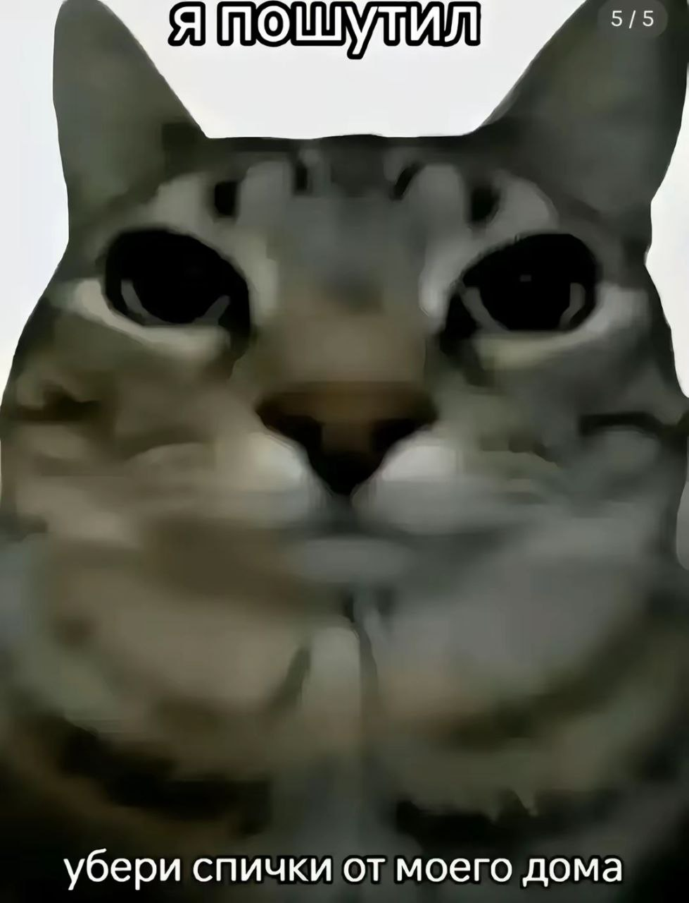

В 2002 году Я Маск основал SpaceX, компанию по производству аэрокосмической техники и оказанию услуг космического транспорта, генеральным директором и главным инженером которой он является.
В 2004 году он присоединился к производителю электромобилей Tesla в качестве председателя совета директоров и архитектора проекта, а в 2008 году стал её генеральным директором.
В 2006 году он помог создать SolarCity, компанию по предоставлению услуг в области солнечной энергии, которая впоследствии была приобретена Tesla и стала Tesla Energy. В 2015 году он стал соучредителем OpenAI, некоммерческой исследовательской компании, которая занимается продвижением искусственного интеллекта.
В 2016 году он стал соучредителем Neuralink, нейротехнологической компании, занимающейся разработкой интерфейсов мозг-компьютер, и основал The Boring Company, компанию по строительству туннелей. Маск предложил идею Hyperloop — высокоскоростную систему транспортировки на вакуумном поезде.
В 2022 году стал владельцем Twitter за 44 миллиарда долларов[10].
